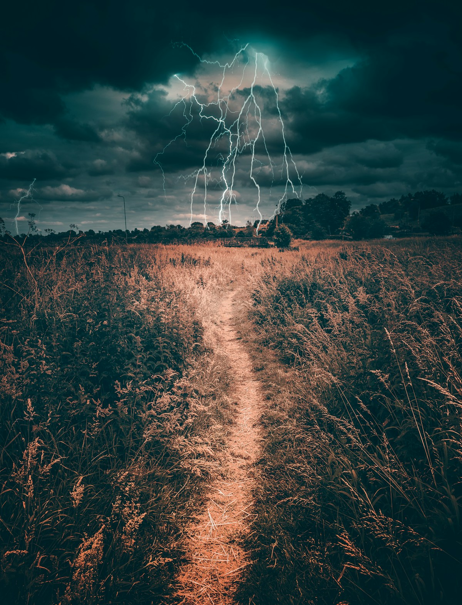
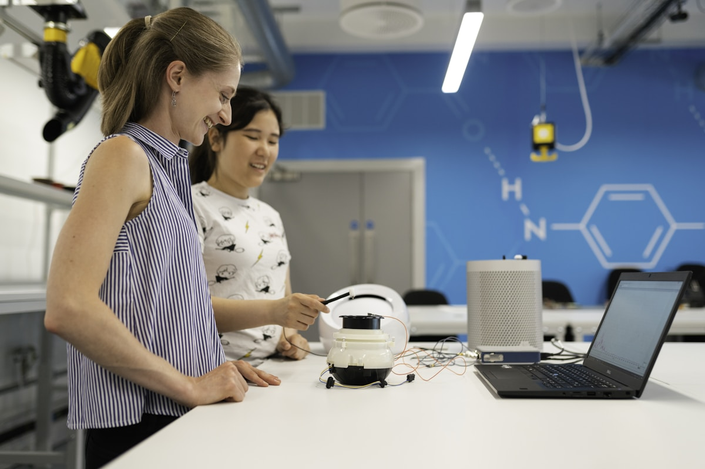
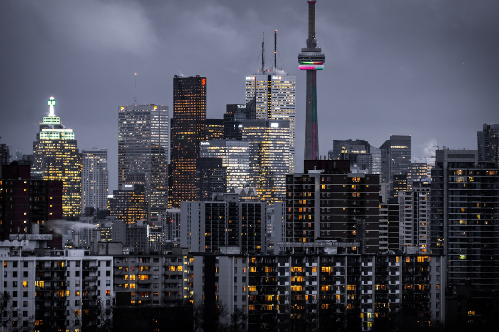
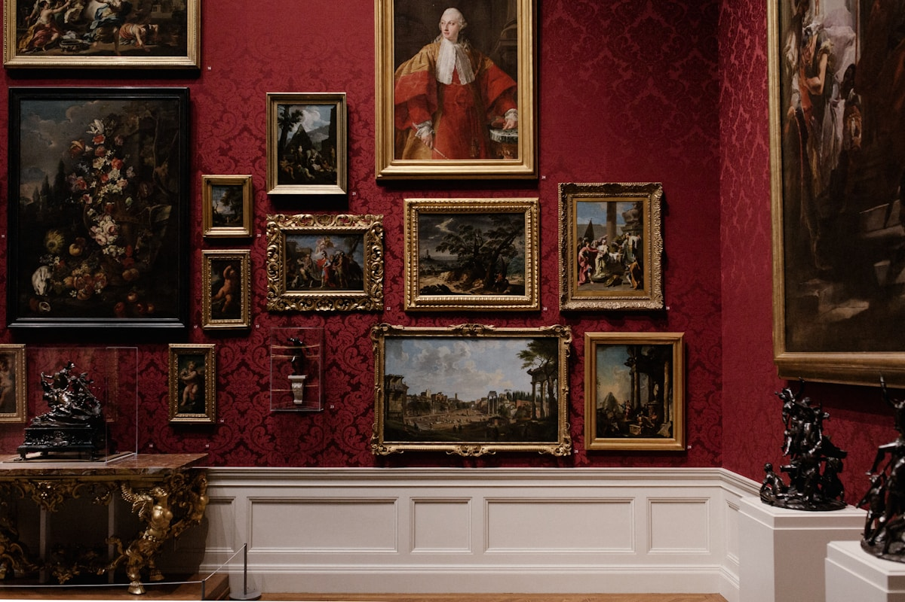
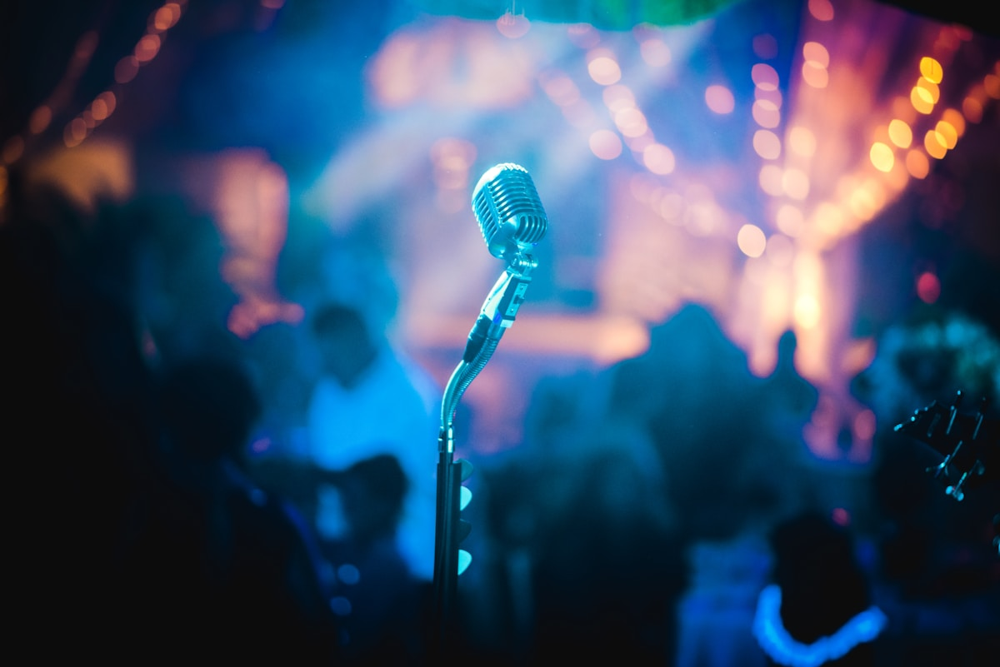
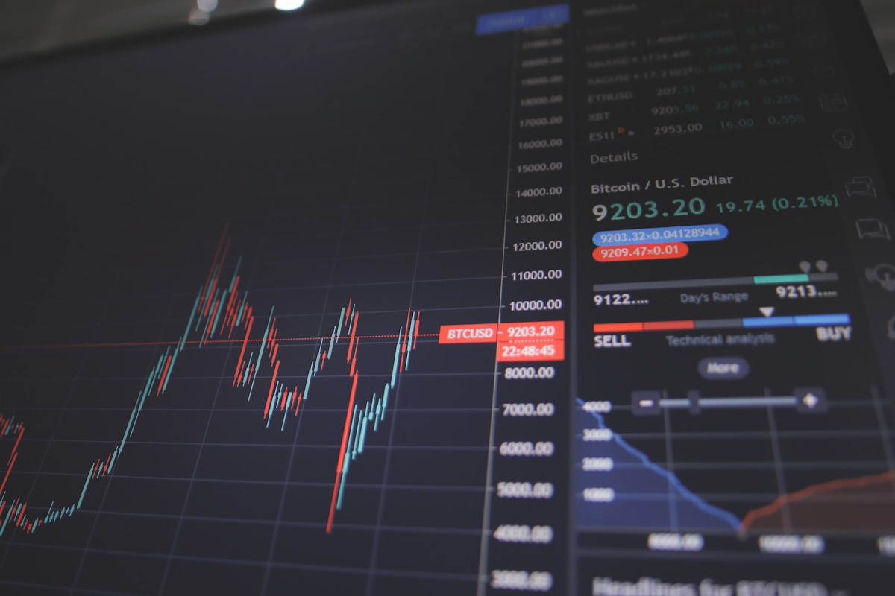
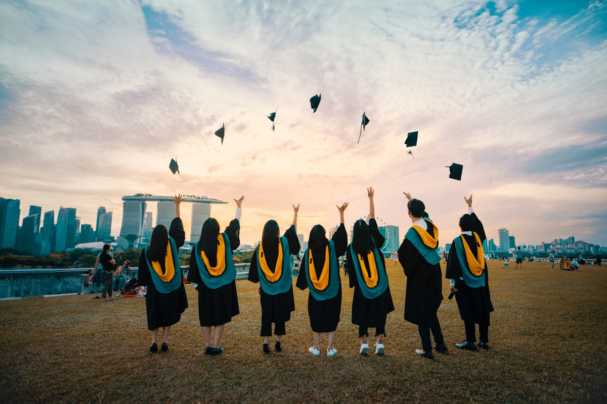
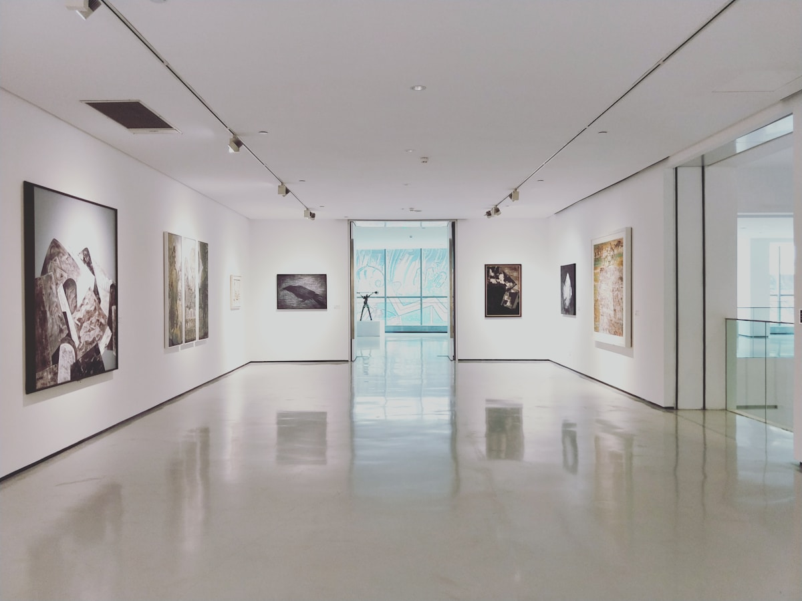

×
Germany gave us our first building. German engineers helped us prove our forms were possible. This is a reflection on that relationship — what it meant, where it paused, and why we believe the most interesting chapters are still ahead.
In 1993, when no one had yet built a Zaha Hadid building at scale, it was a German client who took the risk. The Vitra Fire Station at Weil am Rhein — a 270 square metre concrete structure on a furniture manufacturer's campus — was not a grand civic commission. But it was a proof of concept that changed everything.
The building demonstrated something that had only existed on paper and in theoretical drawings: that forms of this kind could be built precisely, responsibly and durably. It required German structural engineers and contractors to work in an entirely new way. They rose to the challenge. The result is still standing, still celebrated, and still visited by architects from across the world.
That first act of trust set the tone for two subsequent decades of collaboration. BMW Leipzig and Phaeno Wolfsburg followed in 2005 — both with German clients, German contractors, German precision. The relationship was not incidental. It was foundational.
And then, gradually, it quietened. Not through any rupture — but through the accumulating distance of a practice working at global scale, and a German cultural and civic procurement world that moves carefully and asks hard questions. Those questions deserve honest answers, not marketing copy.
This is our attempt at that conversation.
The three completed ZHA buildings in Germany span twelve years and represent a significant arc: from a small, experimental structure that tested the limits of what was buildable, to a major piece of corporate infrastructure, to a public science institution serving hundreds of thousands of visitors. Each one was a collaboration. None of them would have been possible without German engineering culture.



What these buildings share is not just formal language — it is the evidence of a working method that is inseparable from engineering rigour, material honesty and the patient translation of computational geometry into built reality. The Bauhaus held that art and craft should be unified. ZHA's approach in Germany has always argued the same thing: that complex form and precise execution are not in tension; they are the same ambition.
German contractors and engineers who worked on these projects did not simply execute drawings. They participated in finding the solutions. That collaborative relationship — between computational design and industrial fabrication — is something we want to resume.
We have heard, through various channels, that German cultural and civic institutions — potential clients we want to work with — have questions about ZHA. We think evasion would be the wrong response. These are legitimate questions. Here is how we would answer them directly.
Zaha Hadid was a singular creative personality. Her death in 2016 raises the reasonable question of whether the practice retains its design rigour — or whether it has become a brand operating on past momentum, applying a visual style without the intellectual depth that generated it.
The practice Zaha built was always larger than one person. The parametric methodology she pioneered — the use of computation to derive form from performance, the insistence on research before design — is embedded in our culture and our tools. Since 2016 ZHA has completed over 40 major buildings across five continents. The design quality of those buildings is the most honest answer to this question. We would ask that German clients look at what we have built recently — not just what we built when Zaha was alive.
Complex forms require specialist subcontractors. Bespoke details are harder to repair than standard ones. German public procurement is rightly attentive to lifecycle cost and Wirtschaftlichkeit — and ZHA's formal language can appear to be in tension with these values.
This is a fair challenge, and we do not dismiss it. Our honest answer has two parts. First: parametric optimisation, properly applied, produces materially efficient structures — the Phaeno's concrete form used significantly less material than a conventional structural solution. Efficiency and complexity are not opposites when the form is generated by performance criteria. Second: we have delivered civic institutions — MAXXI, Riverside Museum, the Broad — within agreed public budgets. We are willing to open a transparent conversation about cost methodology with any German institutional client.
German architectural culture is deeply Sachlich — it respects form that follows from function, rational argument, structural logic. There is a reasonable concern that 'parametric' is decorative complexity applied post-hoc: a signature aesthetic rather than a principled methodology.
The concern is legitimate, and we would apply it critically to some work in the broader parametric field. ZHA's own methodology distinguishes between form-finding that emerges from genuine performance optimisation — structural efficiency, environmental response, circulation logic, material behaviour — and form that deploys parametric tools for purely visual effect. Our CODE research group produces academic-grade work on computational design, material science and environmental performance. We welcome scrutiny of specific projects against specific performance criteria. That is the right conversation to have.
German public procurement is layered, consultative and contextually attentive. There is a concern that international "star architects" impose a global formal language without genuine engagement with place, community or the specifics of German urban culture — and that this produces buildings that feel foreign to the cities they inhabit.
The Phaeno Science Centre in Wolfsburg stands as our answer to this. It was inserted into a difficult brownfield gap between the railway and the city, raised on pilotis to create public space at grade, and designed around the specific cultural and educational brief of a German public institution. It is not a foreign object; it is a building that responded to a very specific site, brief and civic context. We would argue that parametric design is inherently context-responsive — the variables being optimised can and should include site orientation, wind, view, the geometry of adjacent streets. We want to make the argument for this in each specific German context we are invited to address.
German civic and cultural buildings are typically procured through formal Wettbewerb (competition) processes. These are resource-intensive for international practices. German clients sometimes worry that large international offices are not genuinely committed to German competitions — that they submit polished imagery without deep engagement with the brief.
We have participated in and won major international competitions throughout our history. Where we choose to engage with a German competition, we do so with genuine commitment and with a team that understands the specific cultural, institutional and urban context of that brief. We are also open to conversations with German institutions that are considering their briefs before a formal competition is launched — the most interesting buildings tend to emerge from the longest conversations, not the shortest procurement windows.
Rather than claiming a perfect alignment, we want to be honest about where the overlaps are real and where the tensions require work. The most useful relationships between architects and clients are founded on shared values — not the projection of what a client wants to hear.
We are not claiming to be the only practice that can make these arguments. We are claiming that these arguments are genuinely ours — that they emerge from how we work, not from how we present ourselves. The difference matters to German clients, and it matters to us.
The buildings below are not selected to impress. They are selected because they represent the kinds of commissions that German cultural and civic institutions are considering: museums, opera houses, cultural centres, port authorities, universities. Each one was a public client. Each one required navigating a complex institutional brief, a public mandate and a scrutinous procurement process.
We offer them not as precedents to replicate, but as evidence of a practice that has spent thirty years working seriously with public institutions — and that takes the responsibility of that work seriously.

30,000 sqm of galleries, public spaces and cultural infrastructure, inserted into a complex urban site in Rome's Flaminio district. The building organises five overlapping gallery "tubes" around a free public courtyard — a civic gesture that belongs to the neighbourhood. Winner of the RIBA Stirling Prize. One of the most studied contemporary museums in the world.

A 1,800-seat opera house and 400-seat multifunctional theatre, set alongside a new cultural district on the Pearl River. The twin-volume form — two "pebbles" eroded by water — resolves the complex acoustic requirements of world-class performance spaces within a fluid formal language. Technical execution was achieved through detailed collaboration with acoustic engineers and specialist contractors.
A transport and social history museum built on the banks of the Clyde, in a post-industrial district of the city. The building's section — a continuous Z-form connecting the street to the river — creates a democratic through-route for the public regardless of museum admission. Winner of the European Museum of the Year Award. One of Glasgow's most visited public attractions.

A new headquarters for the Port of Antwerp, formed by inserting a contemporary crystalline volume above a derelict 19th-century fire station. The project is simultaneously an act of conservation and an act of architectural confidence — preserving the historic shell while creating a distinctly contemporary addition that respects but does not mimic its context. A public authority building that opened the year Zaha Hadid died.

Part of a new campus development that brought together six international architects for the Vienna University of Economics and Business (WU). ZHA's building houses the main university library and learning centre — a complex brief requiring flexible research space, collaborative zones, quiet study environments and public-facing cultural programming, all within a German-language academic context.

A 4,600 sqm art museum on a major American university campus. The building's pleated stainless steel and glass facade responds to the campus geometry through parametric analysis of solar exposure, view corridors and pedestrian movement patterns. The interior creates gallery spaces of varying character within a unified formal system — flexible enough for contemporary art, intimate enough for the specific work.
Germany is entering a significant period of cultural and civic investment — museums being rethought, opera houses being reconsidered, universities expanding their public-facing ambitions. The conversations that lead to the most interesting buildings tend to start long before a competition brief is published.
We are not making a sales pitch. We are extending an invitation to a genuine conversation about what your institution needs and whether ZHA's approach — its strengths and its particular way of working — is a good fit for what you are trying to build.
"We started in Germany. We have never stopped thinking about what it means to work here again."
Begin the conversation